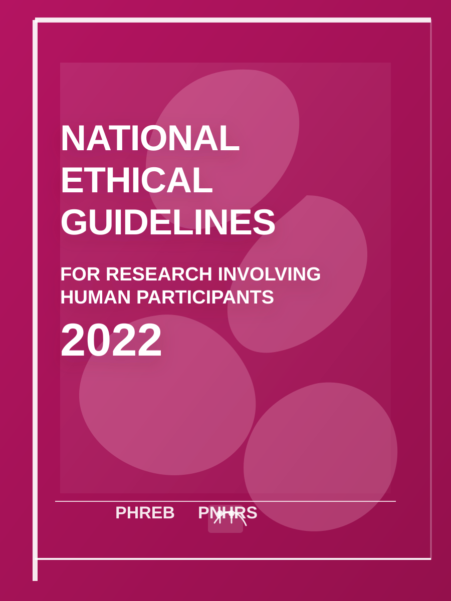

Browse the full PDF directly in this tab. The page is designed as a focused reference workspace for current and future guidance materials.
Source: Philippine Council for Health Research and Development (PCHRD), Department of Science and Technology. This copy of the 2022 National Ethical Guidelines is provided here for reference. The official version is available at pchrd.dost.gov.ph/publications/2022-national-ethical-guidelines